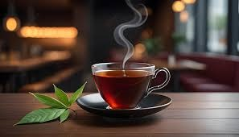

Why do we do it?
| At Julie’s Teas, we are passionate about bringing the finest teas from around the world to your cup. Our journey began with a simple love for tea and a curiosity for the rich traditions behind it. Over the years, we’ve traveled far and wide to discover the best tea-growing regions, from the misty mountains of China to the vibrant tea gardens of India and beyond. |
|
 | Our mission is to offer a diverse collection of both exotic and timeless teas, carefully curated for tea lovers of all kinds. Whether you’re exploring bold new flavors or savoring your daily favorites, we believe that every cup should be an experience of quality, craftsmanship, and care. |